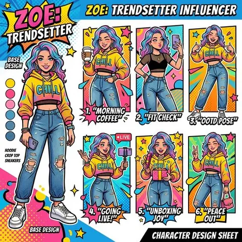
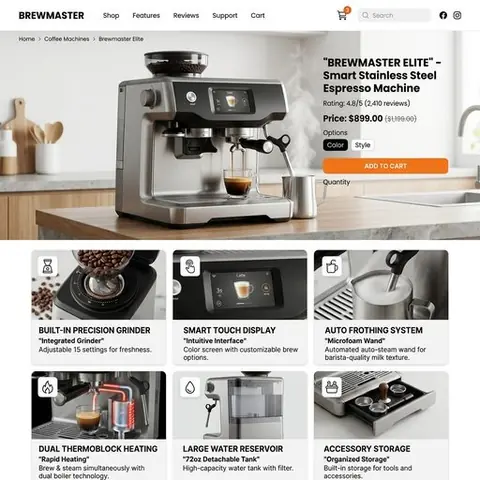
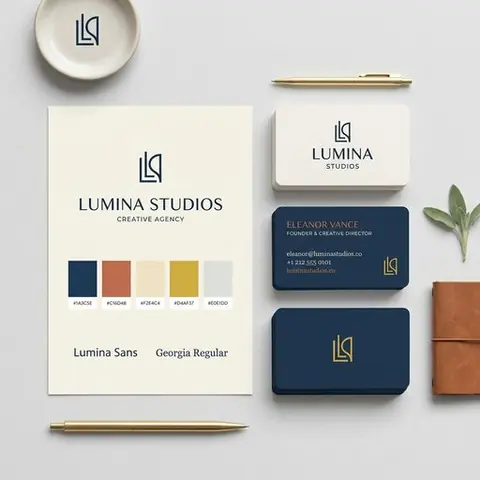

Đăng nhập sẵn
Mở và đăng nhập những trang bạn định dùng — Google Flow, ChatGPT, Gemini, Grok. Extension không kèm tài khoản nào, nó mượn đúng phiên đăng nhập của bạn.
Chrome Extension
SEOSONA Flow điều khiển chính những tab AI bạn đã đăng nhập — Google Flow, ChatGPT, Gemini, Grok — để tạo ảnh và video theo lô, rồi tự tải kết quả về máy.
Ba bước
Không npm install, không bundler, không tài khoản SEOSONA. Tải repo về, nạp vào Chrome là chạy.
Mở và đăng nhập những trang bạn định dùng — Google Flow, ChatGPT, Gemini, Grok. Extension không kèm tài khoản nào, nó mượn đúng phiên đăng nhập của bạn.
Bấm icon, side panel mở bên phải. Dán cả danh sách prompt, chọn model, tỉ lệ khung hình, số lượng. Alt+S mở panel, Alt+G chạy ngay.
Extension tự gõ prompt vào tab provider, chờ kết quả, tải file về theo đúng mẫu tên bạn đặt — 1K, 2K hay 4K. Panel hiện tiến độ từng job.
Workflow
Nối các bước lại thành một quy trình chạy tự động. Ảnh sinh ra đi qua cổng chất lượng, được gắn chữ, tải về đúng thư mục, rồi báo về Telegram — không cần ngồi canh.
↔ Vuốt ngang để xem hết sơ đồ
26 loại node
Image-to-Prompt
Chuột phải một ảnh bất kỳ trên web, khoanh vùng màn hình, hoặc tải ảnh từ máy. Kết quả xuất ba dạng để dùng ngay.

"subject": "chai nước hoa thuỷ tinh, nắp vàng", "lighting": "studio mềm, hắt sáng từ trái", "background": "be trung tính, hoa mờ", "camera": "85mm, khẩu f/4, chính diện", "grade": "ấm, tương phản thấp", "ratio": "1:1"
Thư viện mẫu
Ảnh thật do chính extension sinh ra, kèm sẵn trong bản tải về. Mỗi mẫu là một prompt đã chỉnh xong — đổi chủ đề rồi chạy lại là ra bộ của bạn.







Kho prompt
Nằm ngay trong extension, chia bảy nhóm và xếp hạng theo chất lượng. Hoàn toàn ngoại tuyến — không gọi mạng, không tải thêm.
Tính năng
Nhập một lúc hàng chục prompt, chạy tuần tự hoặc song song. Có humanized delay, giới hạn đồng thời và tự thử lại khi lỗi.
Kéo thả dựng chuỗi xử lý: tạo ảnh, ghép, kiểm chất lượng, gắn chữ, tải về, báo Telegram — chạy một mạch không cần ngồi canh.
Chuột phải ảnh bất kỳ trên web, chọn vùng màn hình, hoặc tải ảnh từ máy. Gemini hoặc ChatGPT phân tích thành prompt, xuất ba dạng JSON / English / Tiếng Việt.
Ảnh và video tự lưu theo mẫu tên file bạn đặt, phân thư mục khớp với dự án. Không phải ngồi bấm tải từng cái.
Mỗi trang một adapter riêng. Extension tự tìm tab provider đang đăng nhập, hoặc mở tab mới nếu chưa có.
Chạy ở khung bên phải trình duyệt nên tab chính vẫn dùng bình thường. Popup thì bấm ra ngoài là mất, panel thì không.
Kho prompt và skill đóng gói ngay trong extension, chia bảy nhóm và xếp hạng. Hoàn toàn ngoại tuyến, không gọi mạng.
Cấu hình, lịch sử và hạn mức đều nằm trong máy. Tầng gọi mạng ra backend bị chặn ngay trong mã nguồn, không phải bằng thiết lập.
Có hệ thống selector override: chỉnh bằng cấu hình chứ không phải chờ bản vá, và bộ chẩn đoán tự báo selector nào hỏng.
Nói trước cho rõ
Cách làm nào cũng có đánh đổi. Đây là những điểm yếu thật của SEOSONA Flow — biết trước thì đỡ mất thời gian.
Đây không phải API — extension điều khiển DOM. Khi Google hay OpenAI đổi giao diện, thao tác có thể hỏng. Có sẵn selector override để sửa mà không cần đụng mã nguồn.
Hai trang này là những nơi duy nhất tải ảnh lên được qua content script. Grok và Claude không dùng cho tính năng đó.
Extension không tặng credit. Mỗi prompt trừ vào gói bạn đang trả cho Google, OpenAI hay xAI — đúng như khi bạn tự gõ tay.
Hỏi đáp
Không. Extension không gọi API tính phí nào — nó điều khiển phiên đăng nhập sẵn có của bạn trong trình duyệt, nên chi phí đúng bằng gói bạn đang dùng.
Không. Chế độ cục bộ là mặc định: mọi cấu hình, lịch sử và hạn mức đều lưu trong máy, và tầng gọi mạng ra backend bị chặn ngay trong mã nguồn.
Không có bước build. Tải repo về, vào chrome://extensions, bật Developer mode, Load unpacked rồi chọn thư mục seosona-flow — thư mục con chứa manifest.json, không phải thư mục gốc.
Không. Thư viện đã đóng gói sẵn trong repo, mã nguồn nạp thẳng vào Chrome.
Cả hai, đổi ngay trong panel.
Thao tác có thể hỏng — đó là đánh đổi của cách làm không dùng API. Bù lại có hệ thống selector override: sửa bằng cấu hình, không phải chờ bản vá.
Không có bản trả phí, không có giới hạn gói, không có tài khoản nào để đăng ký. Toàn bộ nằm trên GitHub.